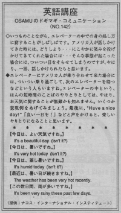

お天気の挨拶。
Every time Osamu is in the elevator, he has trouble. He wondered what he should do when Americans tried to talk to him or smile. In those situations, he would just look away but he really wanted to say something.
いつものことながら、エレベーターの中での身の処し方に窮することがしばしばです。もし、アメリカ人が話しかけてきたら、どうしよう？、にこやかに笑みを投げかけてきてくれた時には…、そんな事態が起こると、ついつい目をそらせてしまうのですが、やはり、きちんと応答できたらと思います。
エレベーターにアメリカ人が乗り合わせて来た場合には、ついつい乗り過ごして、次のエレベーターを待つなどという人もいますね。エレベーターの中という、ほんの短時間の言葉のやりとりとしては、やはり、お天気に関することが無難かも知れません。いくつか表現例をあげてみましょう。最後に、「良い一日を！」／Have a nice day!／などと声をかけると、楽しいやりとりになることと思います。
今日はよい天気ですね。
It's a beautiful day (isn't it?)
今日は暑いですね。
It's very hot today (isn't it?)
今日は蒸し暑いですね。
It's humid today (isn't it?)
最近は暑い日が続きますね。
The weather has been very hot recently.
この数日、雨が多いですね。
It's been very rainy these past few days.

| © 1995-2013 NACOS International Institute. All Rights Reserved. |